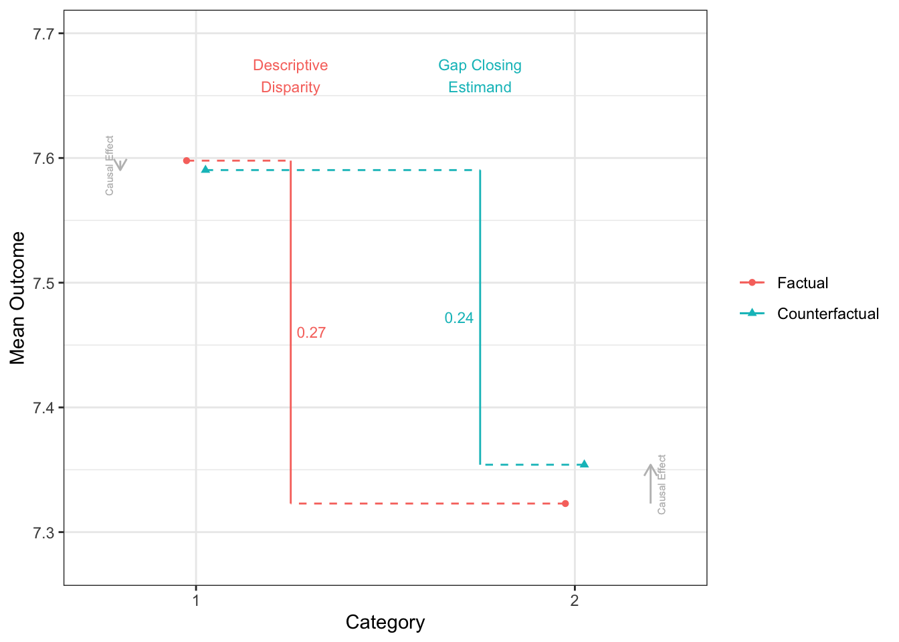

library(tidyverse)
library(cfdecomp)
library(gapclosing)
library(causal.decomp)
d <-
sMIDUS |>
transmute(Y = health |> as.numeric(), # outcome
T = edu |> as.numeric(), # treatment (continuous)
T2 = edu |> case_match(4:6 ~ 0, # treatment (binary)
7:9 ~ 1,
.default = NA) |> factor(),
X = racesex |> factor(levels = c("1", "4", "2", "3")), # note!
L1 = lowchildSES |> as.numeric(),
L2 = abuse |> as.numeric(),
C1 = age |> as.numeric(),
C2 = stroke |> as.numeric(),
C3 = T2DM |> as.numeric(),
C4 = heart |> as.numeric()) |>
mutate(across(L1:C4, \(.x){.x - mean(.x, na.rm = TRUE)})) |>
tibble()前準備
continuuous mediator
cfdecomp
- Sudharsanan and Bijlsma (2021) の方法。mediatorの値をシミュレーションで複数生成するのが特徴
# cfd.mean
fit_cfdecomp <-
cfdecomp::cfd.mean(
formula.y = 'Y ~ X + T + X:T + L1 + L2 + C1 + C2 + C3 + C4',
formula.m = 'T ~ X + C1 + C2 + C3 + C4',
mediator = 'T',
group = 'X',
data = d |> data.frame(),
family.y = 'gaussian',
family.m = 'gaussian',
bs.size = 50,
mc.size = 10,
alpha = 0.05
)fit_cfdecomp$out_nc_m
1 4 2 3
1 7.733828 5.823300 7.109919 6.339354
2 7.705857 5.887552 7.059308 6.384796
3 7.745491 5.816555 7.065829 6.359982
4 7.695950 5.857150 7.109466 6.404936
5 7.749740 5.816569 7.088806 6.438915
6 7.743337 5.838611 7.109247 6.393261
7 7.722353 5.802882 7.082883 6.428800
8 7.706924 5.848398 7.069223 6.478762
9 7.688822 5.822888 7.112621 6.427575
10 7.712176 5.916278 7.075500 6.542631
11 7.753094 5.934160 7.024267 6.342056
12 7.721882 5.830746 7.079876 6.398012
13 7.730350 5.848534 7.069327 6.481873
14 7.712068 5.882159 7.068574 6.329535
15 7.642138 5.866412 7.089691 6.481205
16 7.711352 5.864387 7.062973 6.463713
17 7.697758 5.950426 7.038410 6.442815
18 7.666818 5.887269 7.078397 6.524855
19 7.707273 5.893927 7.083165 6.421992
20 7.721174 5.850679 7.103607 6.440544
21 7.730725 5.862672 7.066366 6.464667
22 7.717825 5.844396 7.035532 6.473902
23 7.701229 5.908771 7.102834 6.455179
24 7.686511 5.948321 7.076630 6.418381
25 7.683956 5.859027 7.075319 6.474196
26 7.689608 5.842157 7.101255 6.347129
27 7.706565 5.922211 7.065158 6.509997
28 7.742376 5.834216 7.059701 6.405482
29 7.723596 5.852520 7.076190 6.369693
30 7.690246 5.872020 7.079470 6.338187
31 7.726875 5.881174 7.082164 6.459880
32 7.708075 5.879050 7.065662 6.495468
33 7.709293 5.907462 7.093476 6.386940
34 7.706883 5.887630 7.083416 6.417473
35 7.679251 5.840690 7.076815 6.425224
36 7.733052 5.862534 7.107096 6.489399
37 7.773463 5.850751 7.073770 6.378006
38 7.675113 5.895002 7.103607 6.337163
39 7.713443 5.865797 7.112969 6.359381
40 7.695383 5.962722 7.089270 6.406525
41 7.728607 5.936738 7.119379 6.417328
42 7.683926 5.817651 7.067036 6.356424
43 7.678275 5.849923 7.067574 6.294538
44 7.736162 5.881177 7.063355 6.386493
45 7.735249 5.902102 7.091964 6.436036
46 7.647793 5.851877 7.063806 6.353024
47 7.707648 5.821325 7.047502 6.424574
48 7.701770 5.803027 7.088441 6.339416
49 7.690957 5.891453 7.042343 6.364659
50 7.680671 5.872399 7.093639 6.393626
$out_cf_m
1 4 2 3
1 7.742376 7.770440 7.755110 7.732658
2 7.694959 7.704526 7.726669 7.690254
3 7.748189 7.738311 7.780096 7.790556
4 7.697173 7.683629 7.699747 7.691527
5 7.745796 7.771502 7.765814 7.780343
6 7.742691 7.779501 7.762333 7.757792
7 7.718566 7.711753 7.738197 7.677267
8 7.713879 7.710798 7.726840 7.742962
9 7.686975 7.689332 7.685553 7.661831
10 7.692474 7.713145 7.716765 7.702644
11 7.754601 7.742869 7.759224 7.732502
12 7.722492 7.739328 7.703166 7.681141
13 7.734625 7.755641 7.740653 7.735323
14 7.719868 7.739795 7.730410 7.691248
15 7.650855 7.655804 7.654462 7.655408
16 7.710193 7.695737 7.733339 7.724394
17 7.712012 7.704681 7.727589 7.728458
18 7.672993 7.673615 7.664840 7.655656
19 7.719795 7.721563 7.713047 7.709342
20 7.714674 7.706375 7.744438 7.746682
21 7.731461 7.716562 7.729537 7.719041
22 7.708469 7.737277 7.707661 7.688520
23 7.715962 7.705924 7.728389 7.726844
24 7.691614 7.698007 7.689020 7.647028
25 7.704290 7.683604 7.679754 7.656410
26 7.704748 7.710178 7.717056 7.645112
27 7.726442 7.710400 7.713291 7.686871
28 7.750639 7.745066 7.757735 7.741659
29 7.729355 7.711171 7.721181 7.677543
30 7.701773 7.695609 7.700016 7.710716
31 7.731307 7.741333 7.739887 7.741304
32 7.722005 7.730877 7.734980 7.718447
33 7.706431 7.698556 7.696195 7.702831
34 7.695088 7.734643 7.708540 7.665806
35 7.677574 7.680168 7.686748 7.663077
36 7.726518 7.714751 7.741753 7.723733
37 7.769060 7.773000 7.784093 7.753708
38 7.689886 7.702558 7.714529 7.709536
39 7.703390 7.717552 7.710301 7.703063
40 7.695115 7.708155 7.704712 7.686051
41 7.746696 7.747342 7.740109 7.756098
42 7.683567 7.710347 7.699576 7.679254
43 7.677108 7.683184 7.676242 7.590870
44 7.747905 7.759307 7.763705 7.765841
45 7.728808 7.759884 7.753542 7.697682
46 7.656526 7.663537 7.663550 7.626192
47 7.714101 7.738422 7.735024 7.721761
48 7.702706 7.698290 7.704638 7.674845
49 7.668032 7.692687 7.691389 7.662267
50 7.676647 7.684100 7.691192 7.620790
$out_nc_quantile_m
1 4 2 3
2.5% 7.652073 5.806071 7.036180 6.331251
50% 7.707862 5.863529 7.077606 6.417401
97.5% 7.752339 5.949952 7.112890 6.521512
$out_cf_quantile_m
1 4 2 3
2.5% 7.659115 7.665805 7.663840 7.622006
50% 7.712945 7.710984 7.719119 7.702738
97.5% 7.753709 7.772663 7.776883 7.777080
$out_nc_y
1 4 2 3
1 7.560252 6.733358 7.311205 6.971600
2 7.633687 6.696184 7.345035 6.962514
3 7.589192 6.666874 7.360186 6.938058
4 7.608588 6.720913 7.323476 6.967779
5 7.612698 6.729768 7.344233 7.042032
6 7.598409 6.658928 7.317580 7.047435
7 7.632760 6.662387 7.353901 6.926887
8 7.582283 6.714781 7.275925 7.060335
9 7.577127 6.649478 7.334549 7.045467
10 7.586404 6.682392 7.309118 7.108105
11 7.654354 6.672843 7.314367 6.979199
12 7.640207 6.663490 7.364594 7.088919
13 7.579451 6.783506 7.354916 7.032341
14 7.541339 6.708060 7.305381 7.018491
15 7.559636 6.679031 7.299831 7.023424
16 7.619413 6.755236 7.342931 6.902480
17 7.585451 6.698123 7.330866 6.902933
18 7.564628 6.713548 7.300838 6.959534
19 7.600697 6.693409 7.340167 7.059749
20 7.593858 6.662574 7.309823 7.006783
21 7.642924 6.610889 7.279115 7.050430
22 7.616692 6.703528 7.282671 7.050421
23 7.574635 6.757990 7.279736 6.987562
24 7.554747 6.707141 7.325666 6.879229
25 7.592697 6.755147 7.272497 6.870838
26 7.617734 6.649496 7.350127 6.788462
27 7.625945 6.713108 7.308444 7.051906
28 7.603046 6.696331 7.329336 6.899088
29 7.584451 6.687452 7.313386 6.831989
30 7.553215 6.679427 7.299587 6.981646
31 7.581753 6.681836 7.290647 7.004291
32 7.587827 6.733731 7.335669 7.024730
33 7.596489 6.716750 7.317731 6.993357
34 7.644542 6.685643 7.320475 7.111905
35 7.606085 6.686374 7.305567 6.988819
36 7.599733 6.665123 7.318581 7.053930
37 7.630778 6.675914 7.294010 7.018002
38 7.592443 6.708982 7.331472 7.016699
39 7.555697 6.667644 7.288286 6.975222
40 7.626456 6.710216 7.342688 6.987325
41 7.603735 6.710846 7.346065 7.045939
42 7.599178 6.729854 7.288563 7.016309
43 7.597834 6.692000 7.364097 6.988366
44 7.588201 6.743449 7.366221 6.911526
45 7.609964 6.721683 7.290814 6.911986
46 7.561772 6.727422 7.276534 6.996396
47 7.603035 6.668523 7.323307 7.078868
48 7.650779 6.678678 7.308019 6.920890
49 7.607569 6.705581 7.327924 6.891258
50 7.577771 6.734214 7.344265 7.069573
$out_cf_y
1 4 2 3
1 7.562610 7.227217 7.444130 7.415721
2 7.630873 7.198015 7.520648 7.298267
3 7.589890 7.348802 7.513238 7.174003
4 7.608913 7.394068 7.484199 7.263336
5 7.611518 7.286773 7.529202 7.301301
6 7.598244 7.194579 7.495074 7.356278
7 7.631816 7.197288 7.488397 7.537564
8 7.583922 7.212883 7.436632 7.142861
9 7.576577 7.251856 7.522652 7.224769
10 7.580963 7.313998 7.468794 7.251081
11 7.654695 7.200927 7.494772 7.300255
12 7.640348 7.337751 7.502978 7.216710
13 7.580626 7.477383 7.502634 7.159349
14 7.542686 7.180172 7.445250 7.243244
15 7.561933 7.234646 7.386100 7.361893
16 7.619117 7.313334 7.475914 7.076738
17 7.588305 7.262150 7.488637 7.416694
18 7.565734 7.139137 7.434885 7.083316
19 7.602836 7.202656 7.464372 7.369318
20 7.592338 7.405376 7.466134 7.286899
21 7.643107 7.187207 7.459682 7.255134
22 7.614282 7.224898 7.480568 7.326376
23 7.577840 7.262907 7.413502 7.277020
24 7.555881 7.119477 7.453738 7.086990
25 7.596765 7.167447 7.397616 7.150798
26 7.621375 7.207039 7.490602 6.998488
27 7.630471 7.234501 7.426337 7.245591
28 7.605114 7.271265 7.478565 7.057391
29 7.585954 7.126091 7.495482 7.078813
30 7.556530 7.222032 7.456077 7.371984
31 7.582808 7.276768 7.432127 7.279758
32 7.590913 7.292329 7.487761 7.218881
33 7.595808 7.249002 7.445578 7.173627
34 7.642040 7.290495 7.458510 7.276923
35 7.605710 7.221801 7.449461 7.105210
36 7.598211 7.291992 7.454724 7.338380
37 7.629559 7.053276 7.487850 7.256398
38 7.596131 7.151108 7.478593 7.428826
39 7.553335 7.081500 7.415931 7.173587
40 7.626394 7.233598 7.464722 7.392671
41 7.608158 7.142582 7.472246 7.296912
42 7.599088 7.245252 7.434806 7.250802
43 7.597586 7.225666 7.475792 7.165518
44 7.590751 7.309139 7.559975 7.154915
45 7.608529 7.339840 7.464676 7.293674
46 7.563985 7.202997 7.401533 7.239464
47 7.604356 7.144586 7.471619 7.291824
48 7.650993 7.243144 7.450962 7.224556
49 7.602245 7.124643 7.444893 7.039003
50 7.576728 7.196806 7.465552 7.333518
$out_nc_quantile_y
1 4 2 3
2.5% 7.553560 6.649482 7.276062 6.840730
50% 7.598121 6.697227 7.318156 6.994877
97.5% 7.649376 6.757371 7.364482 7.103788
$out_cf_quantile_y
1 4 2 3
2.5% 7.553908 7.090045 7.398497 7.043140
50% 7.597899 7.226441 7.465843 7.253107
97.5% 7.649218 7.402832 7.527728 7.426096
$mediation
4 2 3
0.5960221 0.5337967 0.4219810
$mediation_quantile
4 2 3
2.5% 0.4649193 0.3756905 0.1921605
97.5% 0.7887737 0.7559828 0.7540824
$mc_conv_info_m
[,1] [,2] [,3] [,4]
[1,] 7.746281 5.857004 7.097588 6.340873
[2,] 7.737009 5.824329 7.095680 6.294820
[3,] 7.733742 5.831281 7.102417 6.327331
[4,] 7.744034 5.826502 7.107326 6.335852
[5,] 7.749761 5.815956 7.104579 6.344717
[6,] 7.741292 5.822553 7.102921 6.334976
[7,] 7.735675 5.820890 7.106525 6.336334
[8,] 7.737412 5.826674 7.107978 6.333732
[9,] 7.734444 5.828166 7.111650 6.346099
[10,] 7.733828 5.823300 7.109919 6.339354
$mc_conv_info_y
[,1] [,2] [,3] [,4]
[1,] 7.563688 6.741906 7.308664 6.972084
[2,] 7.561130 6.733619 7.308271 6.957404
[3,] 7.560228 6.735382 7.309659 6.967767
[4,] 7.563068 6.734170 7.310671 6.970483
[5,] 7.564648 6.731495 7.310105 6.973309
[6,] 7.562311 6.733168 7.309763 6.970204
[7,] 7.560762 6.732747 7.310506 6.970637
[8,] 7.561241 6.734214 7.310805 6.969808
[9,] 7.560422 6.734592 7.311561 6.973750
[10,] 7.560252 6.733358 7.311205 6.971600mean(fit_cfdecomp$out_nc_y[,2] - fit_cfdecomp$out_nc_y[,1])[1] -0.8991661mean(fit_cfdecomp$out_cf_y[,2] - fit_cfdecomp$out_nc_y[,1])[1] -0.3637952mean(fit_cfdecomp$out_nc_y[,2] - fit_cfdecomp$out_cf_y[,2])[1] -0.535371fit_cfdecomp$mediation 4 2 3
0.5960221 0.5337967 0.4219810 mean(fit_cfdecomp$out_nc_y[,3] - fit_cfdecomp$out_nc_y[,1])[1] -0.2789548mean(fit_cfdecomp$out_cf_y[,3] - fit_cfdecomp$out_nc_y[,1])[1] -0.1314808mean(fit_cfdecomp$out_nc_y[,3] - fit_cfdecomp$out_cf_y[,3])[1] -0.147474mean(fit_cfdecomp$out_nc_y[,4] - fit_cfdecomp$out_nc_y[,1])[1] -0.6093427mean(fit_cfdecomp$out_cf_y[,4] - fit_cfdecomp$out_nc_y[,1])[1] -0.3529107mean(fit_cfdecomp$out_nc_y[,4] - fit_cfdecomp$out_cf_y[,4])[1] -0.256432causal.decomp
- Park et al. (2023) の方法。
# smi
fit.y <- lm(Y ~ X + T + X:T + L1 + L2 + C1 + C2 + C3 + C4, data = d)
fit.m <- lm(T ~ X + C1 + C2 + C3 + C4, data = d)
fit_smi <- smi(fit.y = fit.y,
fit.m = fit.m,
treat = "X",
sims = 100,
conf.level = .95,
conditional = TRUE,
covariates = 1,
# baseline covariatesを調整できる
#covariates = c("C1", "C2", "C3", "C4"),
seed = 227,
)
fit_smi
Results:
estimate 95% CI Lower 95% CI Upper
Initial Disparity (1 vs 4) -0.8993401 -0.9925190 -0.79813505
Disparity Remaining (1 vs 4) -0.3384430 -0.4880863 -0.14795873
Disparity Reduction (1 vs 4) -0.5608971 -0.7346168 -0.42650061
Initial Disparity (1 vs 2) -0.2749659 -0.3378874 -0.19366549
Disparity Remaining (1 vs 2) -0.1213246 -0.2203441 -0.05458727
Disparity Reduction (1 vs 2) -0.1536412 -0.1896213 -0.10521328
Initial Disparity (1 vs 3) -0.6137425 -0.7326095 -0.47793913
Disparity Remaining (1 vs 3) -0.3500123 -0.5151994 -0.08733348
Disparity Reduction (1 vs 3) -0.2637302 -0.4880614 -0.11574038- sensitivity analysis(Park et al. 2023)
sensRes <- sensitivity(boot.res = fit_smi, fit.m = fit.m, fit.y = fit.y,
mediator = "T",
covariates = c("C1", "C2", "C3", "C4"),
treat = "X",
sel.lev.treat = "4",
max.rsq = 0.3)
plot(sensRes)
binary mediator
cfdecomp
# cfd.mean
set.seed(123456)
fit_cfdecomp_b <-
cfd.mean(
formula.y = 'Y ~ X + T2 + X:T2 + L1 + L2 + C1 + C2 + C3 + C4',
formula.m = 'T2 ~ X + C1 + C2 + C3 + C4',
mediator = 'T2',
group = 'X',
data = d |> mutate(T2 = as.numeric(T2) - 1) |> data.frame(),
family.y = 'gaussian',
family.m = 'binomial',
bs.size = 50,
mc.size = 10,
alpha = 0.05
)
mean(fit_cfdecomp_b$out_nc_y[,"4"] - fit_cfdecomp_b$out_nc_y[,"1"])[1] -0.8981701mean(fit_cfdecomp_b$out_cf_y[,"4"] - fit_cfdecomp_b$out_nc_y[,"1"])[1] -0.5546351mean(fit_cfdecomp_b$out_nc_y[,"4"] - fit_cfdecomp_b$out_cf_y[,"4"])[1] -0.343535fit_cfdecomp_b$mediation 4 2 3
0.3828971 0.1298177 0.2061071 mean(fit_cfdecomp_b$out_nc_y[,"2"] - fit_cfdecomp_b$out_nc_y[,"1"])[1] -0.2774845mean(fit_cfdecomp_b$out_cf_y[,"2"] - fit_cfdecomp_b$out_nc_y[,"1"])[1] -0.2419289mean(fit_cfdecomp_b$out_nc_y[,"2"] - fit_cfdecomp_b$out_cf_y[,"2"])[1] -0.03555558mean(fit_cfdecomp_b$out_nc_y[,"3"] - fit_cfdecomp_b$out_nc_y[,"1"])[1] -0.5849521mean(fit_cfdecomp_b$out_cf_y[,"3"] - fit_cfdecomp_b$out_nc_y[,"1"])[1] -0.4655888mean(fit_cfdecomp_b$out_nc_y[,"3"] - fit_cfdecomp_b$out_cf_y[,"3"])[1] -0.1193632causal.decomp
# smi
fit.y <- lm(Y ~ X + T2 + X:T2 + L1 + L2 + C1 + C2 + C3 + C4, data = d)
fit.m <- glm(T2 ~ X + C1 + C2 + C3 + C4, data = d, family = binomial(link = "logit"))
fit_smi_b <- smi(fit.y = fit.y,
fit.m = fit.m,
treat = "X",
sims = 100,
conf.level = .95,
conditional = TRUE,
# covariates = 1,
covariates = c("C1", "C2", "C3", "C4"),
seed = 123456)
fit_smi_b
Results:
estimate 95% CI Lower 95% CI Upper
Initial Disparity (1 vs 4) -0.95667843 -1.02938841 -0.88175003
Disparity Remaining (1 vs 4) -0.61262729 -0.77966809 -0.46844380
Disparity Reduction (1 vs 4) -0.34405113 -0.49650368 -0.21581205
Initial Disparity (1 vs 2) -0.31394841 -0.38058533 -0.26000373
Disparity Remaining (1 vs 2) -0.27995004 -0.34624791 -0.22226331
Disparity Reduction (1 vs 2) -0.03399837 -0.05003528 -0.02022012
Initial Disparity (1 vs 3) -0.59968604 -0.69525994 -0.49987857
Disparity Remaining (1 vs 3) -0.48148718 -0.61387973 -0.32105036
Disparity Reduction (1 vs 3) -0.11819886 -0.24676548 -0.03361808sensRes <- sensitivity(boot.res = fit_smi_b,
fit.m = fit.m,
fit.y = fit.y,
mediator = "T2",
covariates = c("C1", "C2", "C3", "C4"),
treat = "X",
sel.lev.treat = "4",
max.rsq = 0.3)
plot(sensRes)
gapclosing
- Lundberg (2022)
# gapclosing - regression
# stochastic intervention
# treatmentの割り当て確率の予測値を算出
fit_glm <- glm(T2 ~ X + C1 + C2 + C3, data = d, family = binomial(link = "logit"))
# 全員のtreatmentが1だった時の予測値
assing_prob <- predict(fit_glm, newdata = d |> mutate(X = "1"), type = "response")
# 予測値をもとにrandom draw
draw <- rbinom(n = nrow(d), size = 1, prob = assing_prob)
fit_gapclosing <-
gapclosing(
data = d |> mutate(T2 = as.numeric(T2) - 1),
outcome_formula = Y ~ T2 * X + C1 + C2 + C3 + C4 + L1 + L2,
treatment_name = "T2",
category_name = "X",
counterfactual_assignments = draw # random draw
)
fit_gapclosing
Factual mean outcomes:
# A tibble: 4 × 2
X estimate
<fct> <dbl>
1 1 7.60
2 4 6.70
3 2 7.32
4 3 6.98
Counterfactual mean outcomes (post-intervention means):
# A tibble: 4 × 2
X estimate
<fct> <dbl>
1 1 7.60
2 4 7.03
3 2 7.36
4 3 7.11
Factual disparities:
# A tibble: 12 × 2
X estimate
<chr> <dbl>
1 1 - 4 0.899
2 1 - 2 0.275
3 1 - 3 0.614
4 4 - 1 -0.899
5 4 - 2 -0.624
6 4 - 3 -0.286
7 2 - 1 -0.275
8 2 - 4 0.624
9 2 - 3 0.339
10 3 - 1 -0.614
11 3 - 4 0.286
12 3 - 2 -0.339
Counterfactual disparities (gap-closing estimands):
# A tibble: 12 × 2
X estimate
<chr> <dbl>
1 1 - 4 0.566
2 1 - 2 0.241
3 1 - 3 0.483
4 4 - 1 -0.566
5 4 - 2 -0.325
6 4 - 3 -0.0830
7 2 - 1 -0.241
8 2 - 4 0.325
9 2 - 3 0.242
10 3 - 1 -0.483
11 3 - 4 0.0830
12 3 - 2 -0.242
Additive gap closed: Counterfactual - Factual
# A tibble: 12 × 2
X estimate
<chr> <dbl>
1 1 - 4 0.334
2 1 - 2 0.0339
3 1 - 3 0.131
4 4 - 1 -0.334
5 4 - 2 -0.300
6 4 - 3 -0.203
7 2 - 1 -0.0339
8 2 - 4 0.300
9 2 - 3 0.0972
10 3 - 1 -0.131
11 3 - 4 0.203
12 3 - 2 -0.0972
Proportional gap closed: (Counterfactual - Factual) / Factual
# A tibble: 12 × 2
X estimate
<chr> <dbl>
1 1 - 4 0.371
2 1 - 2 0.123
3 1 - 3 0.214
4 4 - 1 0.371
5 4 - 2 0.480
6 4 - 3 0.710
7 2 - 1 0.123
8 2 - 4 0.480
9 2 - 3 0.287
10 3 - 1 0.214
11 3 - 4 0.710
12 3 - 2 0.287disparityplot(fit_gapclosing, category_A = "1", category_B = "4")disparityplot(fit_gapclosing, category_A = "1", category_B = "2")
disparityplot(fit_gapclosing, category_A = "1", category_B = "3")
- 機械学習をつかったdoubly robustな方法も使える
# gapclosing - ranger, doubly robust
fit_gapclosing_ranger <-
gapclosing(
data = d |> mutate(T2 = as.numeric(T2) - 1),
outcome_formula = Y ~ T2 + X + C1 + C2 + C3 + C4 + L1 + L2,
treatment_formula = T2 ~ X + C1 + C2 + C3 + C4 + L1 + L2,
treatment_name = "T2",
treatment_algorithm = "ranger",
outcome_algorithm = "ranger",
category_name = "X",
counterfactual_assignments = rbinom(n = nrow(d), size = 1, prob = assing_prob)
)
fit_gapclosing
Factual mean outcomes:
# A tibble: 4 × 2
X estimate
<fct> <dbl>
1 1 7.60
2 4 6.70
3 2 7.32
4 3 6.98
Counterfactual mean outcomes (post-intervention means):
# A tibble: 4 × 2
X estimate
<fct> <dbl>
1 1 7.60
2 4 7.03
3 2 7.36
4 3 7.11
Factual disparities:
# A tibble: 12 × 2
X estimate
<chr> <dbl>
1 1 - 4 0.899
2 1 - 2 0.275
3 1 - 3 0.614
4 4 - 1 -0.899
5 4 - 2 -0.624
6 4 - 3 -0.286
7 2 - 1 -0.275
8 2 - 4 0.624
9 2 - 3 0.339
10 3 - 1 -0.614
11 3 - 4 0.286
12 3 - 2 -0.339
Counterfactual disparities (gap-closing estimands):
# A tibble: 12 × 2
X estimate
<chr> <dbl>
1 1 - 4 0.566
2 1 - 2 0.241
3 1 - 3 0.483
4 4 - 1 -0.566
5 4 - 2 -0.325
6 4 - 3 -0.0830
7 2 - 1 -0.241
8 2 - 4 0.325
9 2 - 3 0.242
10 3 - 1 -0.483
11 3 - 4 0.0830
12 3 - 2 -0.242
Additive gap closed: Counterfactual - Factual
# A tibble: 12 × 2
X estimate
<chr> <dbl>
1 1 - 4 0.334
2 1 - 2 0.0339
3 1 - 3 0.131
4 4 - 1 -0.334
5 4 - 2 -0.300
6 4 - 3 -0.203
7 2 - 1 -0.0339
8 2 - 4 0.300
9 2 - 3 0.0972
10 3 - 1 -0.131
11 3 - 4 0.203
12 3 - 2 -0.0972
Proportional gap closed: (Counterfactual - Factual) / Factual
# A tibble: 12 × 2
X estimate
<chr> <dbl>
1 1 - 4 0.371
2 1 - 2 0.123
3 1 - 3 0.214
4 4 - 1 0.371
5 4 - 2 0.480
6 4 - 3 0.710
7 2 - 1 0.123
8 2 - 4 0.480
9 2 - 3 0.287
10 3 - 1 0.214
11 3 - 4 0.710
12 3 - 2 0.287disparityplot(fit_gapclosing_ranger, category_A = "1", category_B = "4")
disparityplot(fit_gapclosing_ranger, category_A = "1", category_B = "2")
disparityplot(fit_gapclosing_ranger, category_A = "1", category_B = "3")
References
Lundberg, Ian. 2022. “The Gap-Closing Estimand: A Causal Approach to Study Interventions That Close Disparities Across Social Categories.” Sociological Methods & Research, January. https://doi.org/10.1177/00491241211055769.
Park, Soojin, Suyeon Kang, Chioun Lee, and Shujie Ma. 2023. “Sensitivity Analysis for Causal Decomposition Analysis: Assessing Robustness Toward Omitted Variable Bias.” Journal of Causal Inference 11 (1). https://doi.org/10.1515/jci-2022-0031.
Sudharsanan, Nikkil, and Maarten J Bijlsma. 2021. “Educational Note: Causal Decomposition of Population Health Differences Using Monte Carlo Integration and the G-Formula.” International Journal of Epidemiology 50 (6): 2098–2107. https://doi.org/10.1093/ije/dyab090.